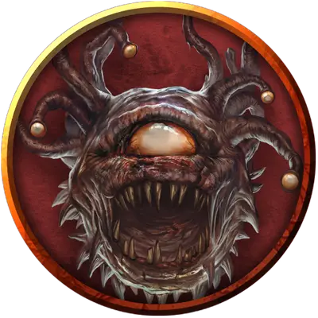

Нерозар Побежденный
Nerozar the Defeated
Большая Нежить, нейтрально-злая, именной НИП

Класс Доспеха 15 (природный доспех)
Хиты 93 (11к10 + 33)
Скорость 0 футов, летая 20 футов (парит)
| мод | спас | ||
|---|---|---|---|
| СИЛ | 10 | +0 | +0 |
| ЛОВ | 8 | −1 | −1 |
| ТЕЛ | 16 | +3 | +3 |
| мод | спас | ||
|---|---|---|---|
| ИНТ | 3 | −4 | −4 |
| МДР | 8 | −1 | +2 |
| ХАР | 5 | −3 | −3 |
Иммунитет к урону яд
Иммунитет к состояниям сбивание с ног, отравление
Чувства тёмное зрение 60 футов, пассивное Восприятие 9
Языки Глубинная речь, Подземный
Опасность 5 (1800 опыта)
Бонус мастерства +3
Особенности
Языки. - понимает Глубинную Речь и Подземный, но не говорит.
Стойкость нежити. Если урон опускает хиты зомби до 0, он совершает спасбросок Телосложения Сл 5 + полученный урон, если только это не был урон излучением или урон от критического попадания. При успехе хиты зомби опускаются до 1.
Действия
Укус. Рукопашная атака оружием: +3 к попаданию, досягаемость 5 футов, одна цель. Попадание: Колющий урон 14 (4к6).
Луч из глаз. Зомби использует случайным образом выбранный магический луч из глаз, выбирая цель, видимую в пределах 60 футов.
• Парализующий луч. Целевое существо должно преуспеть в спасброске Телосложения Сл 14, иначе станет парализованным на 1 минуту. Цель может повторять этот спасбросок в конце каждого своего хода, оканчивая эффект на себе при успехе.
• Луч страха. Целевое существо должно преуспеть в спасброске Мудрости Сл 14, иначе станет испуганным на 1 минуту. Цель может повторять этот спасбросок в конце каждого своего хода, оканчивая эффект на себе при успехе.
• Луч бессилия. Целевое существо должно совершить спасбросок Телосложения Сл 14, получая урон некротической энергией 36 (8к8) при провале, или половину этого урона при успехе.
• Телекинетический луч. Если цель - существо, она должна преуспеть в спасброске Силы Сл 14, иначе зомби переместит её на расстояние до 30 футов в любом направлении. Цель опутана телекинетической хваткой луча до начала следующего хода зомби, либо пока зомби не станет недееспособным.
Если цель - предмет, весящий не больше 300 фунтов, который никто не несёт и не носит, он перемещается в любом направлении на расстояние до 30 футов. Зомби может этим лучом совершать аккуратные действия, например, манипулировать простым инструментом, открывать дверь или контейнеры.
Описание
Нерозар использует Телекинетический Луч, направляя газовые споры для столкновения с нарушителями. Яд газовых спор не оказывает эффекта на бехолдера-зомби.
Нерозар бросил вызов Занатару за власть над Портом Черепа и проиграл. Иллитид, посол Порта Черепа (см. зона 21g) притащил с собой оживлённый труп Нерозара в Стромкулдур, но Азрок не позволил бехолдеру-зомби остаться в поселении и иллитид бросил его здесь, где Нерозар и породил газовые споры.